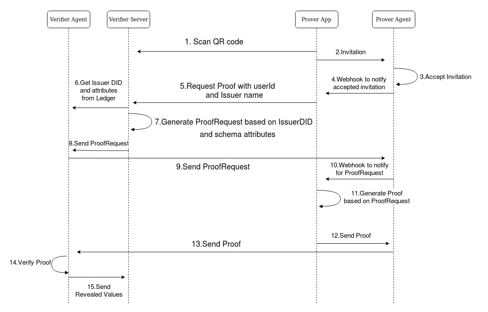

Flow¶
The following sequence diagrams will take you through the basic flow of creating a Connection, Issuing a Credential and Verifying a Credential.
Connection Creation¶

In our product, for obtaining a Connection the prover should have our app installed on their mobile phones and a valid username password provided by the Issuer. When prover login, issuer Server will issue JWT token which will be stored in prover’s app local storage and from now every request would be made including JWT token in its header.
Now, prover will request for Connection from the Issuer Server. Issuer Server will asks for Invitation from Issuer Agent. Issuer Agent will create a new connection and send the invitation to Issuer Server that would store the connection_id and prover_id in its instance of local database for tracking the further requests.
The Issuer Server will send this invitation to Prover app that will eventually accept the invitation by sending it to Prover Agent which will notify the Prover App through the webhook, the connection has been established. On the other hand, the Issuer Agent would also notify the Issuer Server about the connection state through webhooks.
Issue Credential¶

Now, comes the most important part of our product. But do not forget about the first step because that is the prerequisite for this step otherwise you won’t be able to issue Credential. Why? Because for issuing a Credential a connection is required.
After establishing a connection with Issuer, the Prover would request for a Credential. Issuer server will authenticate the request and get prover_id from JWT token. It will then fetch connection_id by prover_id from database that was saved in the previous step.
The Issuer would request its Agent to send CredentialOffer on connection_id associated with prover_id. Now, the Issuer Agent will send CredentialOffer to Prover Agent, in return the Prover Agent will notify Prover App about the CredentialOffer through a webhook. After accepting the CredentialOffer, the Issuer agent would be notified and asks for Issuer Server for Credential Data.
The Issuer Server would get data from database by prover_id and issues a Credential. The Issuer Agent would send this Credential to Prover Agent, that will store this Credential in wallet and notifies the Prover through a webhook.
Verify Credential¶
{kind=link}
It’s time to Verify Credentials. Let’s explain this with a scenario. Prover wants to apply for a job at Scytale Labs(Verifier) but it’s Credential needs to be verified first. Prover scans a QR code to get invitation for Connection and sends this invitation to Agent to create a Connection with Verifier Agent.
After getting notified by a webhook, Prover would request for ProofOffer with prover_id and name of the Issuer who has issued this Credential that needs to be verified. Verifier Server would then asks for Issuer DID and schema attributes from Ledger and creates a dynamic ProofRequest based on those schema attributes with a restriction of Issuer DID.
Verifier sends ProofRequest to connected Prover Agent which will notify the Prover. Prover App will generate a Proof based on ProofRequest and asks Prover to select revealed values to Verifier, then sends it to Verifier Agent through Prover Agent. Verifier Agent verifies the Proof by calling respective endpoint of its Agent, if verified then sends the revealed values by the Prover to Verifier Server